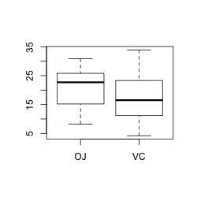
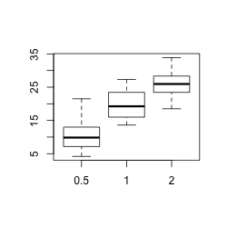
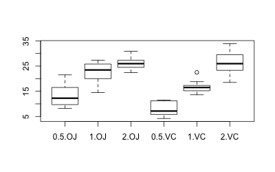
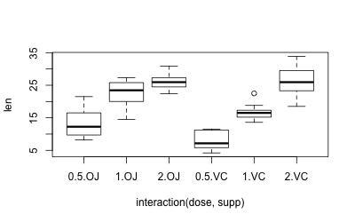

Box plot
Problem
You want to make a box plot.
Solution
This page shows how to make quick, simple box plots with base graphics. For more sophisticated ones, see Plotting distributions (ggplot2).
Sample data
The examples here will use the !ToothGrowth data set, which has two independent variables, and one dependent variable.
ToothGrowth # len supp dose # 4.2 VC 0.5 # 11.5 VC 0.5 # 7.3 VC 0.5 # ... # 27.3 OJ 2 # 29.4 OJ 2 # 23.0 OJ 2
Simple box plots of len against supp and dose:
boxplot(len ~ supp, data=ToothGrowth) # Even though `dose` is a numeric variable, `boxplot` will convert it to a factor boxplot(len ~ dose, data=ToothGrowth)
 
A boxplot of len against supp and dose together.
boxplot(len ~ interaction(dose,supp), data=ToothGrowth)

Note that boxplot and plot have much the same output, except that plot puts in axis labels, and doesn't automatically convert numeric variables to factors, as was done with dose above.
plot(len ~ interaction(dose,supp), data=ToothGrowth)
